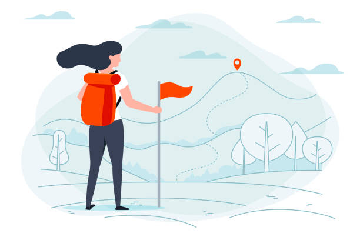

Welcome to my blog!
September 1, 2023 by Talia Baker
Hello dear reader. Welcome to my blog!
My name is Talia and I am a third year computing student at UWI Mona. Going through university is no easy task, especially as a Computer Science major studying in the Caribbean. So I thought I could share my unique experiences with the world, I mean no one else is doing it 😂. Plus I have lots of interests and ideas I want to share and can't wait to start posting about them all. From book reviews, to tips on how to navigate uni to art and history there's alot to delve into. I hope you enjoy tuning in to this chaotic but exciting adventure with me and hopefully gain some tips for a smooth University experience.

My University journey so far.....
September 8, 2023 by Talia Baker
I graduated highschool in 2019. Not knowing what direction I wanted to take in my life I decided to spend the next two years thinking about my next step during sixth form. Orignally, I wanted to do medicine but the universe had other plans. In 2020 less than a year into my first year of 6th form the pandemic put the world on hold. This changed my perspective on alot of things and made me want to dedicate more time to living life than studying for seven years. So, instead of the white coat and Stethoscope I picked up a laptop and stackoverflow. Thankfully I was able to start university in 2021, but just like everyone else online school robbed me of the full experience. After finally deciding on Computer Science as my major, I set off on a suprisingly short yet tulmultuous journey. Needless to say doing computing has exposed me to new perspectives and I learnt how everyday things we use and take for granted were produced through hours and hours of painstaking planning, coding and design.
So far these few years has shown me that everything doesn't always go as planned. There are setbacks, failures and unmet expectations. However, never giving up and having the courage to re-attempt huge obstacles is what makes this journey all the more fulfilling. Because the degree is not the end but the beginning of a life of new oppurtunites.